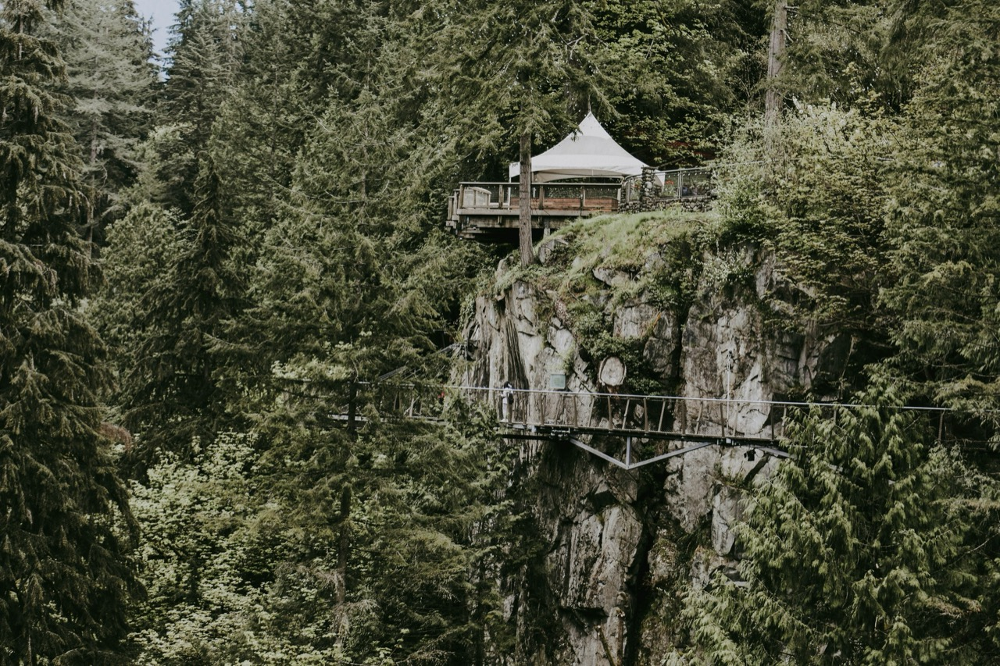
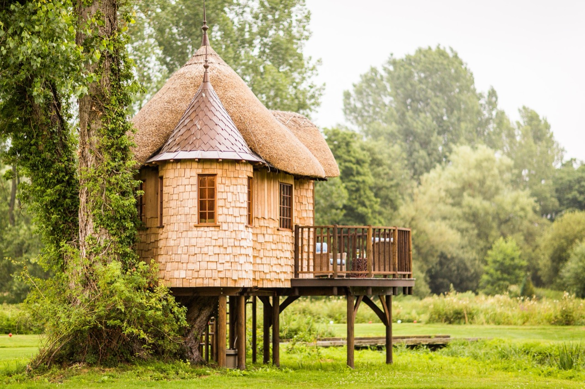
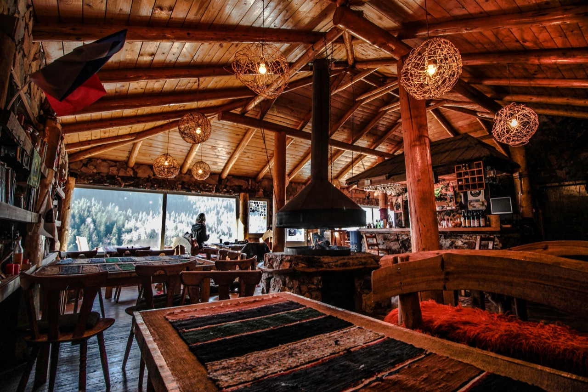

Tree House Wallpapers: Creating Enchanting Digital Escapes from Natural Architecture
Tree house wallpapers represent a unique and captivating category of digital imagery that captures the imagination of both children and adults alike. These enchanting wallpapers transport viewers to whimsical forest retreats, combining the natural beauty of trees with the cozy comfort of architectural structures nestled within their branches. Whether you're seeking to transform your digital devices or physical spaces, tree house wallpapers offer a perfect blend of adventure, nature, and nostalgic wonder.
The appeal of tree house wallpapers stems from their ability to evoke powerful emotions and memories. For many people, tree houses represent childhood dreams and carefree summers spent in nature. The imagery of a secluded dwelling suspended among leafy branches speaks to a desire for escape from daily responsibilities and reconnection with the natural world. When applied as wallpapers on computers, tablets, or phones, these images serve as daily reminders of the beauty and peace that nature can provide.
Modern tree house wallpapers showcase incredible diversity in style and design. Photorealistic versions capture actual tree house structures in stunning detail, from rustic wooden platforms to elaborate multi-level dwellings complete with windows, railings, and rope bridges. These photographs often feature tree houses in exotic locations, surrounded by lush tropical forests or nestled among towering pines in temperate climates. The photorealism of these wallpapers allows viewers to appreciate the actual craftsmanship and engineering required to build safe, functional structures high above the ground.
Artistic and illustrated tree house wallpapers offer another compelling dimension to this category. Digital artists create imaginative interpretations of tree houses that range from realistic to fantastical. Some feature cozy cottages with smoking chimneys, complete with tiny creatures and magical lighting effects. Others depict futuristic tree houses with impossible architecture, defying gravity and physics in delightfully whimsical ways. These artistic wallpapers often incorporate vibrant colors, detailed textures, and creative storytelling elements that engage the viewer's imagination.
The color palettes found in tree house wallpapers vary widely depending on the season and artistic style. Spring-themed wallpapers celebrate fresh green foliage, blooming flowers, and soft morning light filtering through new leaves. Summer editions feature lush, dense canopies with deep greens punctuated by bright accents from wildflowers or fruit-bearing trees. Autumn wallpapers showcase warm oranges, reds, and yellows as leaves change color, creating a cozy atmosphere perfect for the cooler months. Winter tree house wallpapers depict snow-laden branches and frost-covered structures, offering peaceful, serene imagery.
Lighting plays a crucial role in the effectiveness of tree house wallpapers. Sunrise and sunset versions create warm, golden atmospheres that evoke feelings of tranquility and hope. Moonlit tree house wallpapers establish a more mysterious and contemplative mood, with silvery light illuminating the structures and surrounding forest. Some wallpapers capture tree houses during golden hour, when the sun hangs low on the horizon, casting long shadows and creating dramatic contrasts that enhance the visual impact of the imagery.
The architectural styles represented in tree house wallpapers range from primitive to sophisticated. Simple platform designs demonstrate the basic appeal of elevated forest living, while elaborate structures showcase incredible creativity and construction skill. Some wallpapers feature rope bridges connecting multiple tree houses, suggesting entire communities suspended among the branches. Others depict tree houses integrated with nature, using living branches as supports and walls made from woven vines or preserved bark.

Tree house wallpapers appeal to various age groups for different reasons. Children are drawn to the sense of adventure and imagination these images inspire, often dreaming of their own hidden forest retreats where they could escape parental supervision. Teenagers appreciate the aesthetic appeal and the rebellion against conventional living that tree houses represent. Adults often value tree house wallpapers for their connection to nature and as symbols of simpler, less complicated ways of living. Environmental advocates appreciate tree houses as symbols of sustainable, low-impact living that works in harmony with natural ecosystems.
The technical quality of tree house wallpapers has improved dramatically with advances in digital photography and digital art software. High-resolution wallpapers now available for 4K displays showcase incredible detail in bark texture, leaf patterns, and architectural elements. Photographers and artists invest considerable time in capturing or creating perfect specimens that work well across various device types and screen sizes. Many wallpaper collections include multiple versions of the same composition, optimized for different aspect ratios and resolutions.
Popular themes within tree house wallpapers include the fantastical element of magical forests inhabited by enchanted creatures. Many contemporary wallpapers draw inspiration from fantasy literature and film, featuring tree houses that seem to exist in alternate worlds. Steampunk tree houses incorporate mechanical elements and industrial design into their forest settings, creating a unique fusion of nature and technology. Minimalist tree house wallpapers strip away excessive detail, focusing on clean lines and simple geometric forms while maintaining the essential charm of arboreal dwellings.
The psychological benefits of tree house wallpapers extend beyond mere aesthetic appreciation. Environmental psychology research suggests that viewing natural environments, particularly those featuring trees and forest settings, can reduce stress and promote mental well-being. Tree house wallpapers combine this natural imagery with the added appeal of human creativity and ingenuity, creating images that engage multiple emotional and intellectual centers in the human brain. The presence of a human structure within nature suggests harmony and coexistence rather than conflict between human needs and environmental preservation.

Tree house wallpapers often feature supporting ecosystems surrounding the main structure. Birds perch on branches or nest in nearby trees. Small mammals might be visible on the ground below or climbing nearby trunks. Some wallpapers include human figures, such as children climbing ropes or sitting on platforms, providing scale and suggesting stories of adventure and discovery. These contextual elements enhance the narrative quality of the images, inviting viewers to imagine the lives and activities that might occur within or around the tree house.
The furniture and interior elements visible through windows or on platforms add depth to tree house wallpapers. Some designs showcase tiny lanterns, hammocks, tables, and chairs, suggesting comfortable interior spaces designed for relaxation and socialization. Libraries with shelves of books, cozy beds with quilts, and small kitchens appear in more detailed wallpapers, creating complete living spaces that seem both magical and practical. These details encourage viewers to imagine themselves inhabiting these spaces and living alternative lifestyles.
Tree house wallpapers for mobile devices present unique design considerations. The portrait orientation of most smartphones means that vertical compositions work better than horizontal ones. Many mobile wallpapers feature tree houses positioned centrally with framing elements like branches extending to the edges of the screen. Some designs cleverly integrate the tree house with the mobile interface, positioning important UI elements around the image to create a cohesive visual experience.
Seasonal variations in tree house wallpaper collections allow users to update their digital environments throughout the year. Spring collections emphasize renewal and growth, with bright colors and clear skies. Summer wallpapers celebrate abundance and vitality, often featuring multiple tree houses connected by bridges in thriving forests. Fall collections embrace warmth and preparation for rest, with golden tones and harvest imagery. Winter collections range from magical snowy scenes to cozy interior views, suggesting hibernation and intimate gathering spaces.

The popularity of tree house wallpapers in recent years reflects broader cultural trends emphasizing sustainability, wellness, and connection to nature. As urbanization increases and people spend more time indoors, tree house imagery offers psychological refuge and reminds viewers of alternative ways of living. The trend toward minimalism and intentional living has also increased interest in tree houses as symbols of simplified, purposeful existence with reduced environmental footprint.
Collecting high-quality tree house wallpapers has become a hobby for many digital enthusiasts. Online communities dedicated to wallpaper curation maintain extensive libraries of tree house imagery, organized by style, season, color palette, and resolution. Wallpaper websites regularly feature new tree house designs, and artists gain significant followings by specializing in this particular niche. Some photographers and artists have built entire careers around capturing and creating tree house imagery.
Tree house wallpapers serve practical purposes beyond decoration. Many people use them as visual reminders of personal goals and aspirations. A wallpaper featuring a peaceful tree house might serve as daily motivation to prioritize personal well-being and create moments of tranquility in a busy schedule. Others use tree house imagery as inspiration for actual tree house projects, studying the structures depicted in their wallpapers to inform their own constructions.
The intersection of technology and nature represented by tree house wallpapers is particularly relevant in contemporary society. By placing images of human structures within natural settings on our most essential technological devices, we create a visual metaphor for the need to balance technological progress with environmental stewardship. Tree house wallpapers suggest that human creativity and nature need not be in opposition but can exist in beautiful harmony.
Tree house wallpapers occupy a special place in the world of digital imagery. They combine aesthetic beauty, emotional resonance, and imaginative appeal to create wallpapers that users genuinely want to look at repeatedly throughout each day. Whether photorealistic or fantastically artistic, whether featuring simple platforms or elaborate structures, tree house wallpapers transport viewers to magical realms where nature and human ingenuity coexist peacefully. As people continue seeking ways to connect with nature and escape the stresses of modern life, tree house wallpapers will likely remain perpetually popular, evolving in style while maintaining their essential appeal to our deepest desires for adventure, peace, and environmental harmony.